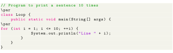
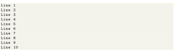
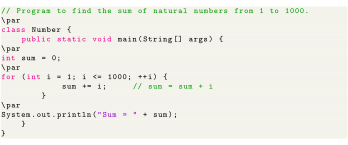

Next: infinite for Loop Up: Control Flow and Decision Previous: switch statement Contents
In computer programming, loops are used to repeat a specific block of code until a certain condition is met (test expression is false). For example, imagine we need to print a sentence 50 times on your screen. Well, we can do it by using the print statement 50 times (without using loops). How about you need to print a sentence one million times? You need to use loops. With loops, we can simply write the print statement one time and run it for any number of times. It's just a simple example showing the importance of loop in computer programming. The syntax of for Loop in Java is:

Steps involving in working of for loop.

Output

In the above example, we have
Here, initially, the value of i is 1. So the test expression evaluates to true for the first time. Hence, the print statement is executed. Now the update expression is evaluated. Each time the update expression is evaluated, the value of i is increased by 1. Again, the test expression is evaluated. And, the same process is repeated. This process goes on until i is 11. When i is 11, the test expression (i <= 10) is false and the for loop terminates.

Output for the above code will be Sum = 500500.